Configuring the Socket Transport Sample
The sample consists of a test server and a test client. The client sends a message to the server. You configure Oracle Service Bus to receive and process the message.
This section describes these tasks:
Create a New Project
- Start the Oracle Service Bus Console.
- Open the Project Explorer.
- In the Change Center, click Edit.
- In the Projects panel, enter
SocketTest in the Enter New Project Name Field, as shown in Figure 6-5.
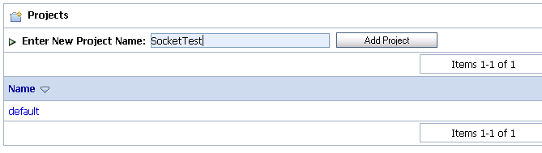
- Click Add Project. The new project appears in the project table.
Create a Business Service
Create a business service to talk to the server.
- Click the SocketTest project name in the project table. The SocketTest panel appears.
- From the Create Service dropdown menu, select Business Service, as shown in Figure 6-6. The General Configuration panel appears.
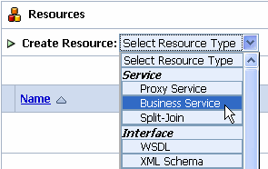
- In the General Configuration panel, enter
SocketBS in the Service Name field.
- Be sure Any XML Service is selected in the Service Type list, and click Next.
- From the Protocol menu, select socket, as shown in Figure 6-7.
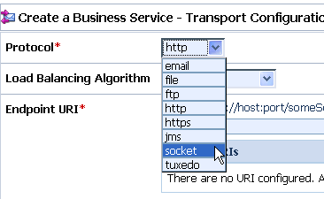
- In the Endpoint URI field, enter:
tcp://localhost:7031, and click Add.
- Click Next.
- In the next panel, accept the defaults by clicking Next.
- After viewing the Summary panel, click Save.
- In the Change Center, click Activate.
Create a Proxy Service
In this section, you create a proxy service.
- From the Create Resource menu, select Proxy Service, as shown in Figure 6-8.
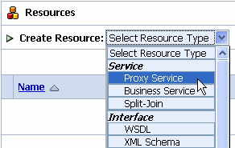
- In the General Configuration panel, enter
SocketProxy in the Service Name field.
- Be sure that Any XML Service is selected in the Service Type list, and click Next.
- From the Protocol menu, select socket.
- In the Endpoint URI field, enter
tcp://7032, and click Next.
- In the next panel, accept the defaults and click Next.
- After viewing the Summary panel, click Save.
- In the Change Center, click Activate.
- Click Submit.
Edit the Pipeline
Now that the business and proxy services are defined, you can edit the pipeline to route incoming messages to the business service.
- In the Change Center, click Create.
- In the Resources section, click the View Message Flow icon in the SocketProxy row, as shown in Figure 6-9.
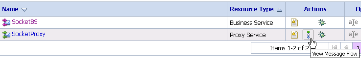
- In the Edit Message Flow window, click the SocketProxy icon and select Add Route from the menu, as shown in Figure 6-10.
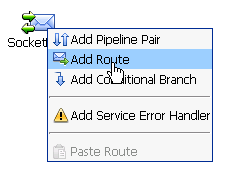
- Click the RouteNode1 icon and select Edit Route from the menu.
- In the Edit Stage Configuration window, click Add an Action.
- In the Route Node window, click Add an Action and select Communication > Routing from the menu, as shown in Figure 6-11.
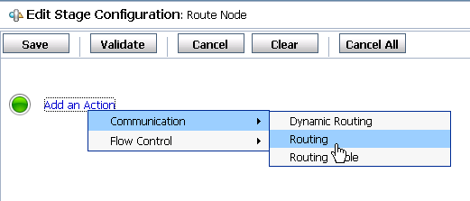
- In the next panel, select <Service>.
- In the Select Service window, select SocketBS from the list, as shown in Figure 6-12, and click Submit.
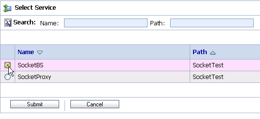
- In the Edit Stage Configuration window, click Save.
- Optionally, click the RouteNode1 icon and change the name to SocketBS.
- Click Save.
- In the Change Center, click Activate, and then click Submit.
Testing the Socket Transport Provider
In this section you test the transport provider using Oracle Service Bus Console.
- Start the test server, as explained previously in Start the Socket Server.
- In the Project Explorer, click SocketTest.
- In the SocketProxy row of the Resources table, click the Launch Test Console icon, as shown in Figure 6-13.
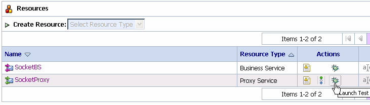
- In the Test Console, enter any valid XML stanza in the text area, or use the Browse button to select a valid XML file on the local system. For example, in Figure 6-14, a simple XML expression
<x/> is entered in the text area.
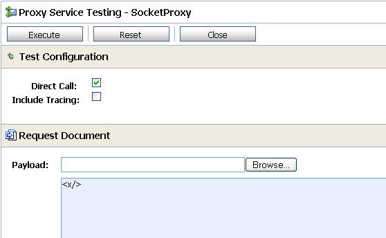
- Click Execute. If the test is successful, information similar that shown in Figure 6-15 appears in the Test Console. In addition, the XML text input into the Test Console is echoed in the server console.
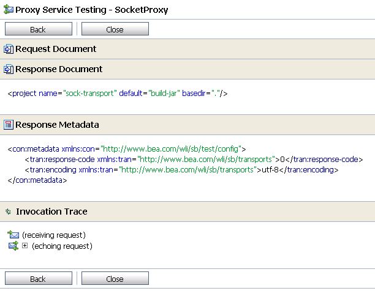
- Close the Test Console.